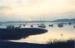

Anne's Cape Cod Favorites
Chatham
|

|

 Stage
Harbor Light and Hardings Beach
Stage
Harbor Light and Hardings Beach
Stage Harbor Light stands alone on a sand penninsula, surrounded by Nantucket Sound, the entrance to Stage Harbor, and the Oyster River inlet. On the flat, sandy trail out to the lighthouse from Hardings Beach, you see birds and grasses and beach plum, and the water off to your right. As you approach the building, you may glimpse sailboats behind it on Oyster River. It's two miles round trip through the sand, described in the Short Nature Walks book. Start at Hardings Beach, at the end of Hardings Road, and return to the beach to relax.
 Boating
Nantucket Sound at Ridgevale Beach
Boating
Nantucket Sound at Ridgevale Beach
If you want to go boating in the open waters, Cape Water Sports rents sailboats, power boats, and surfbikes and kayaks at Ridgevale Beach on Nantucket Sound (432-4339). It's just west of Hardings Beach, and you can sail up to the Stage Harbor light that you may have visited on foot. To get there, heading west on Rte 28, turn left onto Ridgevale Beach. It's a good place to spend the day on the beach, too.
Monomoy
Island Tours
North and South Monomoy Islands are part of the Monomoy National Wildlife Refuge. Boat tours to the islands are offered by Wellfleet Bay Wildlife Sanctuary and the Cape Cod Museum of Natural History. The half-day trips to North Monomoy give you a chance to beachcomb and see the birds and the seals. Cape Cod Museum also offers a 1-hour cruise around North Monomoy just to view the seals.
South Monomoy is six miles out into Nantucket Sound and the Atlantic. I've taken the all-day tour. We walked through tidal pools and marshes and grasses for a mile and a half to the Monomoy Lighthouse, learning from the guide about the birds and wildlife, nature, and history. Cape Cod Museum also offers a trip where you stay overnight at the lighthouse keeper's house
|
Boating
on Pleasant Bay
The protected waters of Pleasant Bay are a great place for boating. You can rent a boat and explore on your own, or take part in a sponsored canoe or cruise trip. Both the National Seashore and Wellfleet Bay Wildlife Sanctuary sponsor canoe trips. The Wildlife Sanctuary and Cape Cod Museum of Natural History sponsor guided cruises to learn about the birds and wildlife, and trek around on the beaches of the Bay's islands.
At the elegant Wequassett Inn, Cape Water Sports rents sailboats, power boats, surfbikes and kayaks. Call 432-5400, x530. Sailboats include the very simple little Escape sailboat or the fast Hobie Cat Wave, as well as larger Daysailers. You can rent for an hour or up to a day. Park at the lower level lot at the Wequassett Inn and walk through their resort pool area to the boat rentals. Combine a sail with a perfect lunch on the inn's dining room patio overlooking the Bay. The Wequassett is at the intersection of Rte 28 and Pleasant Bay Road.
Pleasant
Bay Beach
Salt water to swim in as warm as a pond is the appeal of Pleasant Bay beaches. There's a nice beach on Pleasant Bay just off Rte 28, just a bit south of the Wequassett Inn. There also are are couple of town landings on Nickerson Neck (around Fox Hill Road) that look like they would be fine for swimming in Pleasant Bay
Intro | Tours | Maps | Restaurants
Walking | Bicycling | Boating | Sightseeing | Beaches
Brewster | Chatham | Orleans | Eastham | Wellfleet | Truro | Provincetown
[ Anne's Home Page ]